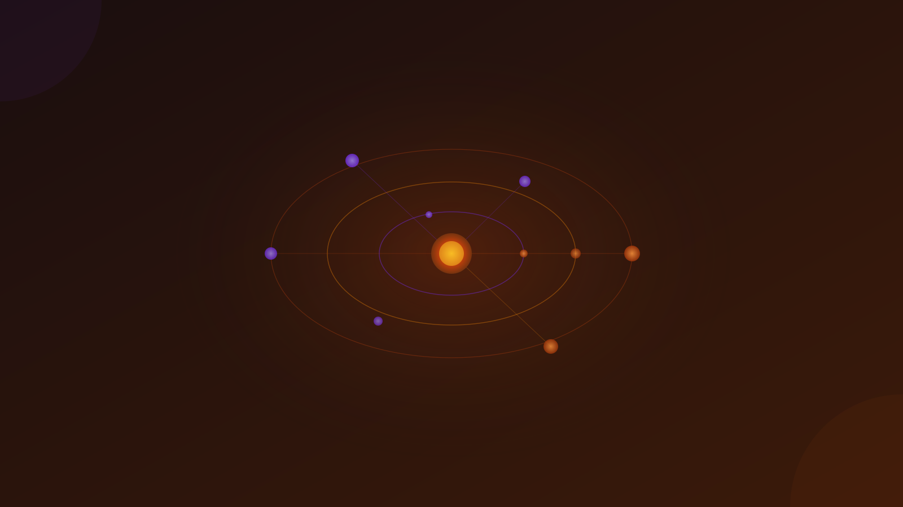

When tech signals in La Rochelle — annual chronogram, updated June 2026
| Jan | Feb | Mar | Apr | May | Jun | Jul | Aug | Sep | Oct | Nov | Dec | |
|---|---|---|---|---|---|---|---|---|---|---|---|---|
| Anchor |
IA-NA
Jun 3
|
EBG
Oct 7–8
|
||||||||||
| Academic |
IUT AI
Mar 20
|
|||||||||||
| Ecosystem | Technopole ATLAS workshops · year-round | |||||||||||
| Village by CA CMDS · year-round | ||||||||||||
| Startup | Startup Weekend La Rochelle · date TBC 2026 | |||||||||||
| Departed |
CoTer
last 2024
|
|||||||||||
Theme: "Adopte ton IA" — pragmatic AI adoption for organisations. Keynotes · hands-on workshops · roundtables · networking lunch. Audience: business decision-makers, CTOs, developers, researchers in Nouvelle-Aquitaine. Organizers: L3I Lab, La Rochelle Université, Pôle Enter. [2] [3] Program covers predictive AI, agentic workflows, AI code tooling, digital sobriety. Speakers include reps from Lectra, Norauto, and Thales.
25 keynotes + 30 workshops over 2 days. All-inclusive format: transport, hotel, meals, and activities included — a genuine destination event. Topics: Data Marketing, Enterprise Data, AI implementation, E-commerce. Audience: ~300 digital leaders from non-competing major brands. EBG has 660 member companies and 110,000+ professionals. [7] Confirmed for La Rochelle since at least 2023. [6] The 2026 La Rochelle edition is not yet officially announced — watch ebg.net for dates.
National AI pedagogy day for IUT educators across France. Topics: AI evaluation methods, AI agents in teaching, assessment frameworks. Primarily academic — not a public-facing conference.
La Rochelle's main innovation campus. Monthly themed sessions: AI/growth workshops, IP & software protection, European funding for startups/SMEs, VR demonstrations at Tribord Sailing Lab. Village by CA CMDS runs its own pitch competitions (Pitch&Invest) and networking afterworks from the same 400 m² auditorium. Cadence: several events per month — all on the ATLAS agenda.
49-hour entrepreneurship sprint: pitch ideas, form teams, build MVPs. Backed by the Nouvelle-Aquitaine region via OpenCampusInnov. 2026 dates not yet published — check the OpenCampusInnov events page for updates.